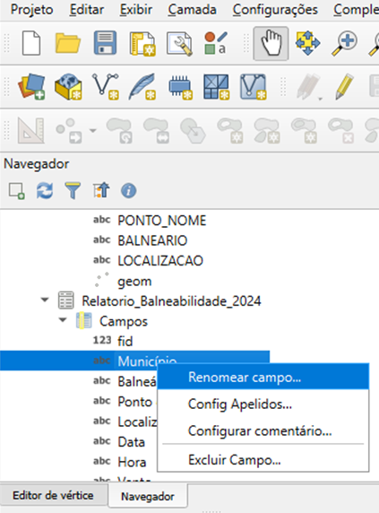
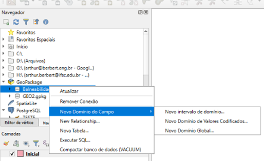

Capítulo 6: Padronizar Campos em Banco de Dados
6.1 Dados existentes
6.1.1 Padronizar o nome dos campos

Clique com o botão direito sobre o campo> Renomear campo...
Dica: ajuste os campos para eu fiquem iguais aos da outra tabela, assim facilita o relacionamento.
6.2 Restringir novos dados
6.2.1 Restrições via Formulários de Atributos no QGIS
O QGIS oferece um sistema bastante flexível para personalização de formulários de atributos. Por meio das propriedades da camada, é possível configurar como os campos serão exibidos durante a edição dos dados. Entre as opções estão o uso de listas suspensas, definição de valores padrão, inserção de dicas informativas, aplicação de máscaras de preenchimento e condições para exibir ou ocultar determinados campos.
Essa abordagem é fácil de utilizar e bastante didática, pois permite guiar o preenchimento dos dados de forma amigável, sem exigir conhecimentos em SQL. Isso é especialmente útil em situações onde se busca facilitar a interação com o banco de dados.
Contudo, é fundamental compreender que essas restrições pertencem ao projeto do QGIS e não à estrutura do banco de dados em si. Em outras palavras, são restrições não permanentes: elas funcionam apenas dentro do projeto onde foram configuradas. Caso esse banco de dados seja aberto em outro projeto do QGIS ou em um software diferente, as restrições não estarão mais visíveis ou ativas.
Portanto, ainda que o QGIS permita configurar formulários que limitem os valores aceitos por campo (como no caso de listas suspensas), é importante lembrar que tais validações não fazem parte do banco. Isso significa que os dados podem ser editados fora do QGIS sem qualquer validação, comprometendo a integridade da informação se não houver regras aplicadas diretamente no banco de dados por meio de comandos SQL.
6.2.2 Validação de Dados no QGIS com Domínios de Campo
O QGIS possui um recurso chamado "Field Domains" (Domínios de Campo), que permite adicionar regras de validação para os dados diretamente dentro do banco de dados, especialmente em arquivos do tipo GeoPackage. Esse recurso é utilizado para restringir os valores permitidos em determinados campos de uma tabela, de forma que os formulários de atributos no QGIS possam guiar o usuário durante a edição dos dados.
Diferentemente das restrições SQL (como CHECK ou FOREIGN KEY), os domínios de campo não são regras aplicadas por todo e qualquer software.
Eles funcionam dentro do ecossistema do QGIS, que os interpreta e os utiliza para configurar automaticamente os formulários de atributos. Com isso, ao abrir uma tabela com domínio definido, o QGIS exibirá listas suspensas e validadores que ajudam a prevenir erros de entrada.
Os domínios de campo podem ser de três tipos principais:
I. Intervalo Numérico (Intervalo de domínio): Define um valor mínimo e máximo aceito para campos numéricos (INTEGER, REAL). Exemplo: valores de temperatura entre 0 e 100 graus.
II. Valor Predefinido (domínio de valores codificados): Aplica-se a campos de texto. Define uma lista fechada de opções, como por exemplo 'Ausente', 'Fraca', 'Moderada', 'Forte'. Ao editar esse campo, o usuário verá uma lista suspensa com essas opções no formulário de atributos.
III. Domínio Global (Globally Scoped)3F[5]: Pode ser aplicado a várias tabelas dentro do mesmo banco de dados. Apesar do potencial de reutilização, esse tipo de domínio é limitado: não permite expressar relacionamentos entre tabelas, como garantir que um campo de uma tabela faça referência a valores existentes em outra (como uma chave estrangeira faria).

É possível realizar algumas configurações avançadas nos campos de domínios pois a janela de configuração de domínios de campo no QGIS oferece algumas opções:
Gerais:
I. Nome do Domínio: É o identificador do domínio, como por exemplo dominio_chuva. Esse nome é usado para associar o domínio aos campos desejados.
II. Descrição: Um texto explicativo sobre o que representa o domínio.
III. Tipo do Campo: Define o tipo de dado do campo a que se aplica (TEXT, INTEGER, REAL, BOOLEAN).
Políticas:
I. Política de Divisão: Usada quando uma feição com valor associado é dividida. Define o comportamento do campo durante esse processo:
a. Valor Padrão: Mantém o comportamento padrão.
b. Duplicar: Duplica o valor original para ambas as partes.
c. Proporção das Geometrias: Divide o valor proporcionalmente à área.
II. Política de União: Define o comportamento ao unir feições:
a. Valor Padrão: Mantém o comportamento padrão.
b. Soma: Soma os valores.
c. Média ponderada das Geometrias: Calcula a média ponderada dos valores em relação á area.
Valores:
I. Intervalo: exclusivo do Intervalo de domínio
a. Mínimo: Define o valor mínimo a ser aceito
b. Máximo: define o valor máximo a ser aceito
II. Valores: exclusivo do domínio de valores codificados
a. Código: inserir código para abreviar o valor.
b. Valor: define o valor a ser inserido.
c. Utilize os botões + e – para adicionar ou remover linhas
Os domínios de campo oferecem uma maneira eficaz de orientar os usuários durante a entrada de dados, sem exigir o uso de SQL. Contudo, é essencial entender que essa validação ocorre apenas no ambiente do QGIS. Qualquer manipulação dos dados feita fora dele não estará sujeita a essas regras. Para projetos mais exigentes ou multiusuários, onde a integridade dos dados é crítica, é altamente recomendada a utilização de restrições no próprio banco de dados, via comandos SQL.
De qualquer forma, os domínios de campo são uma excelente porta de entrada para boas práticas de validação de dados e podem ser utilizados em conjunto com os formulários personalizados para criar uma experiência de edição mais segura e didaticamente orientada.
6.2.3 Validação de Dados via SQL
A validação de dados via SQL consiste em configurar regras de integridade diretamente no banco de dados, utilizando comandos como `CHECK`, `UNIQUE`, `NOT NULL` e chaves estrangeiras (`FOREIGN KEY`).
Vantagen
I. Integridade Garantida em Todo Lugar: Como as regras são definidas no próprio banco, elas funcionam independentemente da ferramenta usada. Isso significa que, seja no QGIS, seja em outro programa, esses critérios permanecerão ativos.
II. Menos Erros e Redundâncias: Restrições como `UNIQUE` e `CHECK` ajudam a evitar duplicações e valores fora do padrão. Dessa forma, minimizam inconsistências que podem comprometer análises e relatórios.
III. Proteção em Ambientes Multiusuários: Em projetos colaborativos, é mais seguro confiar em regras centralizadas, pois cada usuário manipula dados de acordo com as mesmas políticas de integridade.
Desafios no QGIS:
I. Falta de Mensagens de Erro Detalhadas: Se uma regra é violada, o QGIS não mostra ao usuário o motivo exato. O salvamento simplesmente não ocorre, podendo parecer um “bug” ou falha inexplicável.
II. Curva de Aprendizado: Em contextos educacionais, esse comportamento do QGIS dificulta a compreensão do que houve de errado, pois não há retorno imediato indicando qual regra foi violada.
III. Necessidade de SQL: Para criar e manter essas restrições no banco, é preciso familiaridade com comandos SQL, algo que pode ser mais complexo para quem se limita à interface gráfica.
Apesar dessas dificuldades, definir as validações diretamente no banco é essencial em muitos cenários profissionais. Essa prática garante que o conjunto de dados mantenha alta qualidade e consistência, mesmo quando diferentes pessoas ou sistemas estejam envolvidos. Além disso, quando combinado com práticas de documentação e orientação dos usuários, o uso de restrições em nível de banco de dados melhora significativamente a confiabilidade das informações, que é um fator determinante no sucesso de qualquer projeto de geoprocessamento.
6.2.4 Comparativo entre Tipos de Restrição
|
Tipo de Restrição |
Aplicada via |
Persistente no banco? |
Visível no QGIS |
Reutilizável |
|
CHECK (SQL) |
SQL |
Sim |
Não totalmente |
Sim |
|
Field Domain |
QGIS Interface |
Sim (GeoPackage) |
Sim |
Sim (GeoPackage) |
|
Formulário de Atributo |
QGIS Interface |
Não |
Sim |
Não |
Este comparativo mostra que, enquanto o CHECK garante uma validação robusta e duradoura, ele é mais difícil de interpretar visualmente no QGIS. Os Field Domains têm um papel intermediário, sendo úteis para restrições simples e com bom suporte visual, enquanto os formulários oferecem o máximo de controle visual, mas não protegem os dados fora do projeto.
6.2.5 Próximos passos
Durante as primeiras aulas da disciplina, daremos preferência ao uso da interface do QGIS e aos formulários de atributos, pois facilitam o aprendizado e permitem que os alunos compreendam os conceitos sem depender diretamente de códigos SQL. No entanto, à medida que avançarmos na disciplina, passaremos a utilizar comandos SQL para definir restrições reais no banco de dados, aumentando a confiabilidade e o controle sobre os dados.
Este aprendizado gradual culminará no estudo do PostGIS, que permite a criação de bancos de dados espaciais robustos, multiusuários e com suporte total a chaves estrangeiras, índices espaciais e gatilhos (triggers). Em momento oportuno, aprenderemos o que são triggers e como eles permitem automatizar operações no banco, como por exemplo preencher automaticamente a data de edição ou impedir a exclusão de dados que estão em uso.